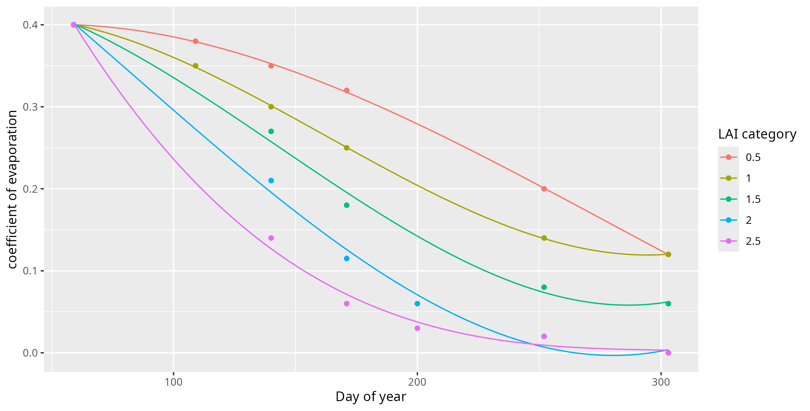

Description of the algorithm#
This R function calculates the water balance of a plant based on meteorological variables, agronomic parameters, and empirical models. The balance corresponds to the difference between water inputs (rainfall, irrigation) and estimated needs (evapotranspiration, sap flow).
Input Parameters#
balance_computation(Rel, ET, Rad, Temp, Rain, DOY,
start_flowering = 109, DayFolAreaMax = 171,
net_rain_effect = 0.66, RAW = 32,
method_leaf_dev = 1)
For more details about the input parameters, see the previous section
Parameter |
Description |
|---|---|
|
Relative humidity (%). |
|
Evapotranspiration (mm/day). |
|
Global radiation (W/m²). |
|
Temperature (°C). |
|
Daily rainfall (mm). |
|
Day of the year. |
|
Day of year when flowering starts (default 109). |
|
DOY when leaf area peaks (default 171). |
|
Reduction factor of rainfall due to nets. |
|
Readily Available Water (mm). |
|
Method to compute leaf development (1 or 2). |
Computation Steps#
In what follows, the variables \texttt{Rel}, \texttt{ET}, \texttt{Rad}, \texttt{Temp} and \texttt{Rain} are all daily measurements. It means that, when they are used in the following, they are implicitely depending on the day of the year. When it is useful, we use the index \(t\) to denote the current day, \(t-1\) to denote the previous one and \(t_0\) to denote the first day when the measurements start.
We will use the Priestley–Taylor formula, that reads as follows:
where:
\(\alpha = 1.26\): Priestley–Taylor parameter
\(\gamma = 0.066 \, \text{kPa}/^\circ \text{C}\): Psychrometric coefficient
\(\lambda = 2.45 \, \text{MJ}/\text{kg}\): Latent heat of vaporization
\(s = s(\texttt{Temp})\) is the slope of the saturation vapor pressure curve in terms of the average daily temperature \texttt{Temp}.
\(A [\text{MJ}\cdot \text{tree}^{-1} \cdot \text{day}^{-1}]\) is the total amount of net (all-wave) radiation absorbed by the leaf canopy;
The first is to compute the slope of the saturation vapor pressure. The steps 2 to 5 will be dedicated to the determination of \(A\).
1. Slope of the saturation vapor pressure curve#
We use the formula provided in the FAO report, equation (13) to compute the slope of the saturation vapor pressure curve at average daily air temperature:
where \(T\) is the daily average temperature in \(°C\).
2. Leaf area#
To compute the leaf area, we first determine a leaf area index (LAI), and then, according to the age and the plant density, we attribute it to one of the five categories (0.5, 1, …, 2.5), from which we deduce the leaf area by tree Indeed, based on an estimate of LAI, leaf area per tree (LA) is obtained as LA = LAI * 5 if we refer to a standard planting density of 2000 tree-ha where each tree occupies 5m2 of soil (thus corresponding in the following to the parameter \(k = 1\)). Let \(D = \texttt{DOY} - \texttt{start}_\texttt{flowering} + 1\). Then, we define
Finaly, we define
Interpolation logic:
Linear before \(\texttt{start}_\texttt{flowering}\)
Polynomial between \(\texttt{start}_\texttt{flowering}\) and \texttt{DayFolAreaMax}
Constant at 100% between \texttt{DayFolAreaMax} and \texttt{DOY} = 252
Then linearly decreasing
We then transform it back to a proportion (and not a percentage)
Finally, the Leaf Area (LA) is computed for different densities of orchard. Although it is difficult to measure leaf area, this parameter is required for calculating water requirements. Note that small inaccuracies have little impact on the result. For practical reasons, we thus propose to assign the crop to a LAI category ranging from 0.5 (young orchard) to >2.5 (adult orchard), as shown in the following table.
| Planting density (tree/ha) |
LAI category according to tree age |
||||
|---|---|---|---|---|---|
| 0.5 |
1 |
1.5 |
2 |
2.5 |
|
| Low (< 1500) |
1-3 |
3-5 |
6-7 |
8-9 |
>9 |
| Medium (2000 - 3000) |
1-2 |
3-4 |
4-5 |
5-6 |
>7 |
| High (>3000) |
1-2 |
3 |
4 |
5 |
>5 |
In case of low vigour due to soil fertility, vigour induced by dwarfing rootstock or week varieties, it is recommended to move down one category. Low vigour orchards and low density plantings may stop their leaf area development at a value of 2.
Then the leaf area is computed as
where \(k\) is the index corresponding to the LAI category.
3. Net radiation#
Let \(R_s\) be the solar radition and \(R_n\) the net radiation. We first convert the unit from W \(\cdot\) m\(^{-2}\) to MJ m\(^{-2}\) day\(^{-1}\) (see Table 3, report of FAO for a reference).
Then, \(R_n\) can be approximated in Switzerland using the following equation (see [])
4. Energy absorbed by the canopy#
We use the formula provided by Pereira et al. [PGVN07a] to deduce the total amount of net (all-wave) radiation absorbed by the leaf canopy, depending on the category \(k\).
5. Sap flow by tree (actual transpiration)#
We can now use the Priestley-Taylor formula to estimate daily sap flow of a tree.
with:
\(\alpha\), \(\gamma\), and \(\lambda\) given above.
Note that this is the sap flow per tree and not per m\(^{-2}\). If one wants to give \(\text{ET}_{\text{PT}}\) in m\(^{2}\), it has to be divided by a factor 5 (for a standard orchard of 2000 trees/ha and thus 5m\(^2\)/tree).
6. Soil evaporation#
Now, starting from the measured value \(\texttt{ET}\), we estimate the evaporation from the ground. It can be estimated as a part of ET\(_o\) that evolves during the growing season in function of the development of the canopy cover i.e. its growing shading effect until LAI max is reached. It is lower for young trees compared with adult trees. We have estimated third-order polynomial curves for each of the LAI category. The polynomials are provided in the code and you can find below a Figure with the curves together with the corresponding points they approximate.
The evaporation is then estimated as
where we have dropped (for clarity) the dependence on the Julian day \texttt{DOY}.
On the other hand, we define WHAT???, as
7. Useful rainfall#
The useful rainfall is the amount of precipitation that is actually added and stored in the soil. During drier periods, less than 5mm of daily rainfall would not be considered effective, as this amount of precipitation would likely evaporate from the surface before soaking into the ground.
8. Raw water balance#
The water balance is the amount of water present in the soil that is available to the plant. The plant will be stressed and irrigation will only be necessary when this reserve is depleted. Let us define \(B_k\) as
Then, we have
with \(B_k^{t_0} = R^{t_0} - \texttt{ET}^{t_0} ({T_k^\text{mat}}^{t_0} + \texttt{Evap}^{t_0}_k)\). In words, this means that \texttt{Balance} is truncated to the interval \([0,\texttt{RAW}]\).
9. Irrigation#
Finally, the irrigation needed is computed as
We also provide a smoothed version of the needeed irrigation using the mean of the needed irrigation in the past 4 days: